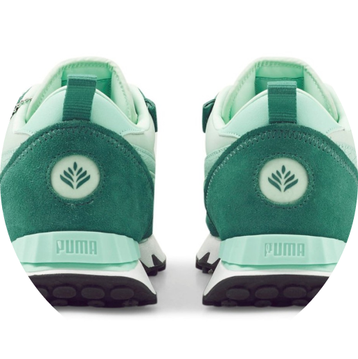

A coleção PUMA X POKÉMON se inspira em alguns dos Pokémon mais icônicos, e aproveitamos algumas de suas características mais marcantes para infundir um pouco do DNA Pokémon no tênis Rider FV. Cores chamativas, gráficos marcantes, e detalhes inspirados no adorável Bulbasaur

Detalhes:
- Cabedal em tecido e suede
- Sobreposições em couro craquelado
- Faixa PUMA Formstrip no lado medial e laterais
- Etiqueta Pokémon destacável
- Etiqueta POKÉMON na língua